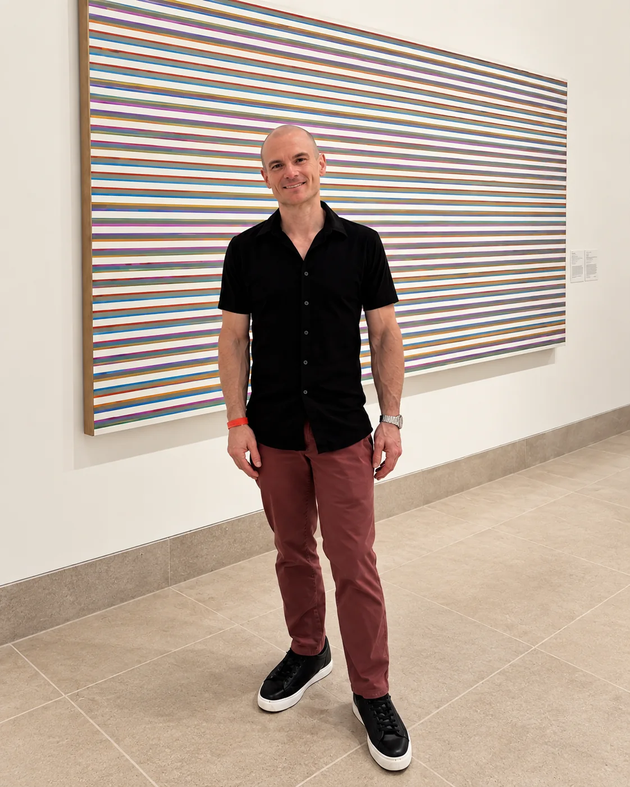
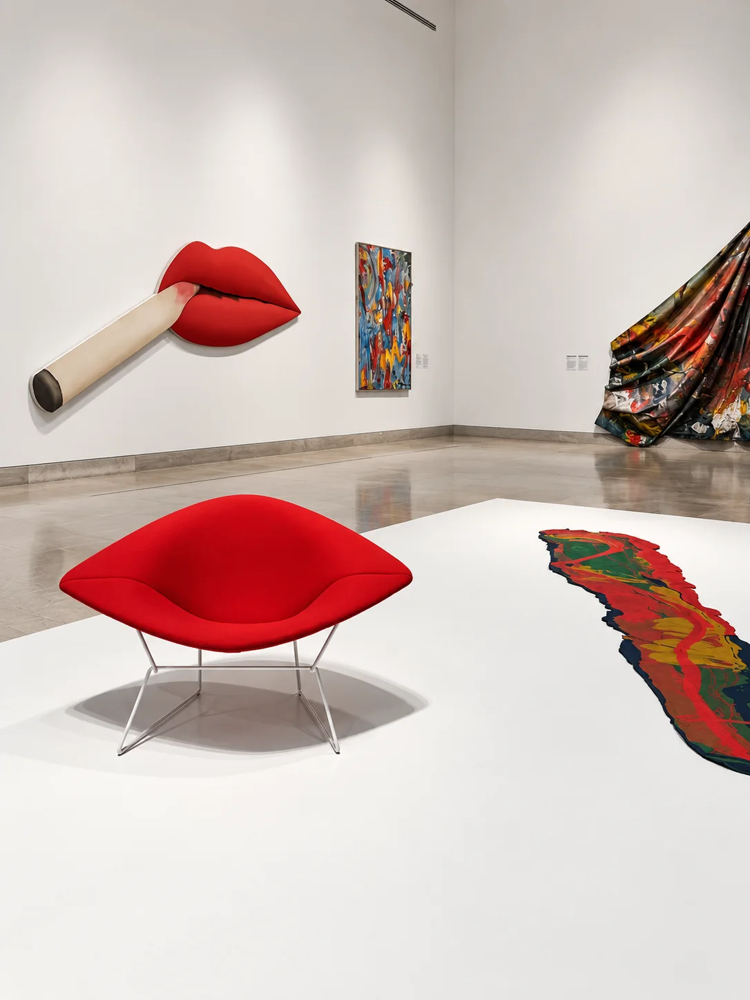

Clint Nail
Clint Nail
Cloud Architect · Microsoft Azure · Enterprise Technology · Dallas
I work at the intersection of cloud architecture, enterprise technology, and practical problem-solving. Based in Dallas, Texas, I spend my professional life building and improving technology environments — and plenty of time outside work staying active, exploring the city, traveling, and pursuing the things that keep life interesting.

About
Technology is part of the story.
I’m Clint Nail, also known professionally as Clinton Nail, a Dallas-based Cloud Architect focused on Microsoft Azure, cloud architecture, and enterprise technology. I enjoy solving complex infrastructure and technology challenges, but work is only one part of who I am. Outside of it, I’m into fitness, travel, photography, and the energy of Dallas life.
Professional
Cloud architecture. Enterprise thinking.
My focus is on Microsoft Azure, cloud architecture, enterprise infrastructure, and the strategic thinking that helps technology organizations move with confidence.
Enterprise Infrastructure
Technology Strategy & Leadership
Beyond work
Life beyond technology.
Running, travel, arts and photography, and life in Dallas all shape the way I think and work. They bring balance, perspective, and a fuller sense of what matters beyond the office.
Fitness & Health
Travel

ARTS & PHOTOGRAPHY
Dallas
Connect
Connect.
Find me elsewhere online.
- LinkedIn linkedin.com/in/clintnail/
- Instagram instagram.com/clintatsunset/
- Facebook facebook.com/clintonnail
- GitHub github.com/clintnaildallas
-
Microsoft Credentials
Verified Microsoft certifications and technical credentials
View credentials → - Email clintnaildallas@gmail.com
- Phone (469) 554-9503
-
Mailing address
Clint Nail
3839 McKinney Avenue
Suite 155-2027
Dallas, TX 75204
United States